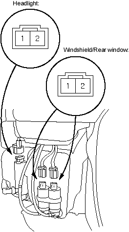
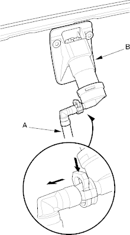
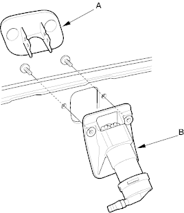

- Remove the left inner fender, refer to the '01 Civic Shop Manual on this CD (see page 20-121).
- Disconnect each 2P connector from the washer motor.

- Test the motor by connecting battery power to the No.1 terminal and ground the No.2 terminal of the washer motor. The motor should run.
- If the motor does not run or fails to run smoothly, replace it.
- If the motor runs smoothly, but little or no washer fluid is pumped, check for a disconnected or blocked washer hose, or a clogged pump outlet in the motor.
- Remove the front bumper, refer to the '01 Civic Shop Manual on this CD (see page 20-104).
- Disconnect the tube (A) from the washer nozzle (B).

- Pull the washer nozzle lid (A) out and remove it from the nozzle (B).

- Remove the two screws and the washer nozzle.
- Install in the reverse order of removal.